Série 12
Image de la question, choix, et correction.
Q1
A1
3 pt
Correction: C — Revenir plus tard.
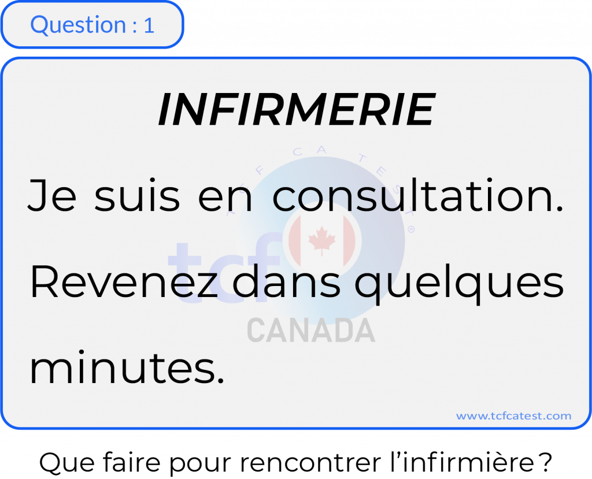
A. Frapper et entrer.
B. Prendre rendez-vous.
C. Revenir plus tard.Bonne réponse
D. Téléphoner.
Q2
A1
3 pt
Correction: C — Des rencontres entre jeunes.
A. Des cours particuliers.
B. Des jobs pendant le week-end.
C. Des rencontres entre jeunes.Bonne réponse
D. Des voyages à l’étranger.
Q3
A1
3 pt
Correction: A — Il annonce son absence.

A. Il annonce son absence.Bonne réponse
B. Il donne un rendez-vous.
C. Il indique son arrivée.
D. Il signale son retard.
Q4
A1
3 pt
Correction: B — Assister à des concerts.
A. Apprendre à jouer d’un instrument.
B. Assister à des concerts.Bonne réponse
C. Réserver des billets de spectacle.
D. S’inscrire à des animations.
Q5
A2
9 pt
Correction: C — Elle souhaite parler à Françoise.
A. Elle doit partir une journée.
B. Elle propose un déjeuner.
C. Elle souhaite parler à Françoise.Bonne réponse
D. Elle veut visiter une entreprise.
Q6
A2
9 pt
Correction: D — Regarder des films.
A. Aller à un anniversaire.
B. Dîner avec son amie.
C. Partir en week-end.
D. Regarder des films.Bonne réponse
Q7
A2
9 pt
Correction: C — Pour modifier l’horaire d’un cours.
A. Pour annoncer un changement.
B. Pour inviter les élèves à une réunion.
C. Pour modifier l’horaire d’un cours.Bonne réponse
D. Pour remercier les élèves de 5e B.
Q8
A2
9 pt
Correction: D — Joyeux.
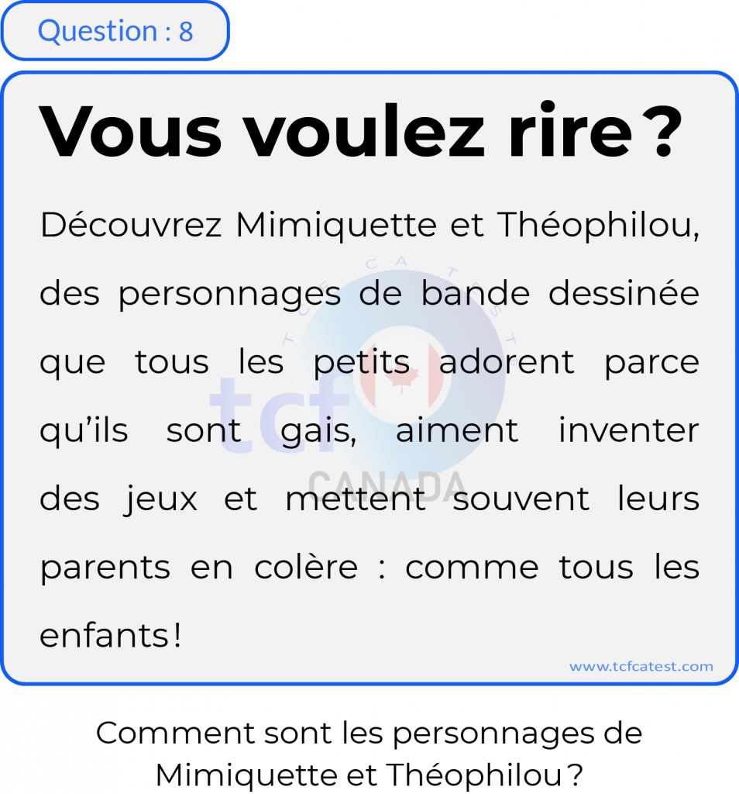
A. Beaux.
B. Calmes.
C. Courageux.
D. Joyeux.Bonne réponse
Q9
A2
9 pt
Correction: D — À des employés.
A. À des clients.
B. À madame Létourneau.
C. À des élèves.
D. À des employés.Bonne réponse
Q10
A2
9 pt
Correction: D — Aux professeurs.
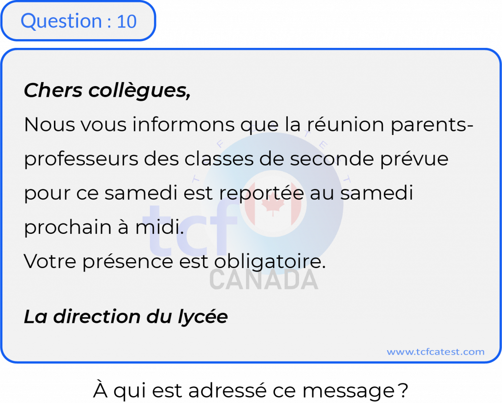
A. Aux élèves.
B. Aux étudiants.
C. Aux parents.
D. Aux professeurs.Bonne réponse
Q11
B1
15 pt
Correction: C — Oui, grâce à des méthodes très simples.
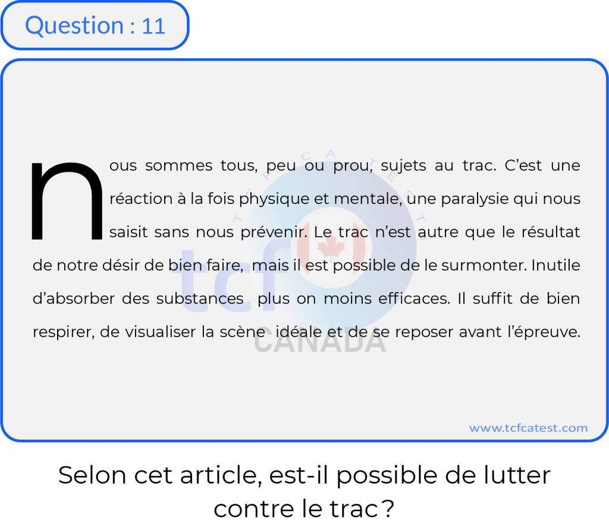
A. Non, parce que c’est une réaction normale.
B. Bien sûr ! il existe des médicaments très efficaces.
C. Oui, grâce à des méthodes très simples.Bonne réponse
D. Certainement pas. Il est insurmontable.
Q12
B1
15 pt
Correction: D — Pour rénover les salles de classe.
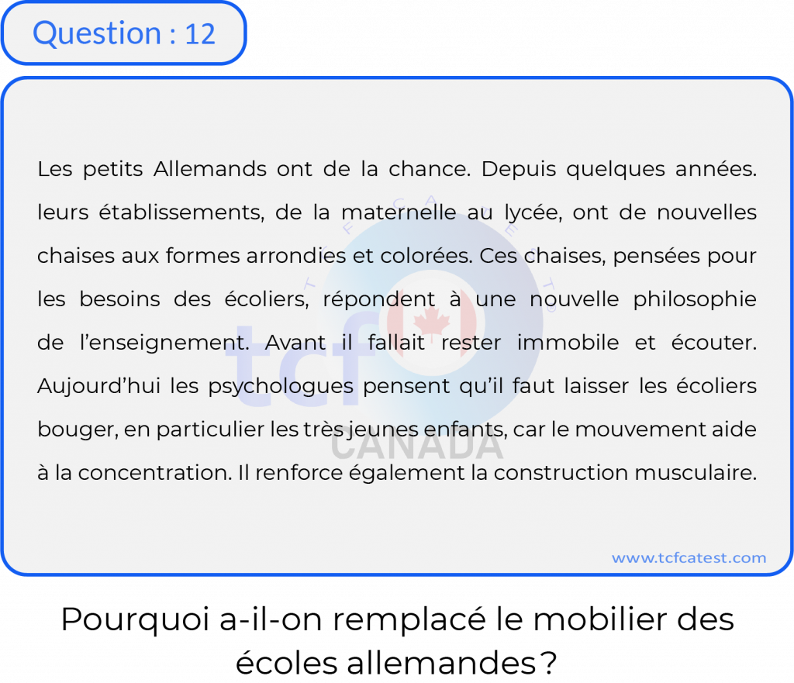
A. Pour accueillir des élèves handicapés.
B. Pour favoriser une autre pédagogie.
C. Pour limiter les problèmes de santé.
D. Pour rénover les salles de classe.Bonne réponse
Q13
B1
15 pt
Correction: C — Elle souhaite des renseignements.
A. Elle demande un remboursement.
B. Elle doit prendre un rendez-vous.
C. Elle souhaite des renseignements.Bonne réponse
D. Elle veut faire une réclamation.
Q14
B1
15 pt
Correction: C — Partager son appartement pour deux mois.
A. Échanger son appartement pendant l’été.
B. Louer un appartement meublé de m².
C. Partager son appartement pour deux mois.Bonne réponse
D. Vendre son appartement près de Paris.
Q15
B1
15 pt
Correction: C — Présenter de nouveaux produits.
A. Demander des informations sur des produits.
B. Passer une commande de produits.
C. Présenter de nouveaux produits.Bonne réponse
D. Proposer une dégustation de produit.
Q16
B1
15 pt
Correction: B — Créer des emplois.
A. Baisser les salaires.
B. Créer des emplois.Bonne réponse
C. Diviser le travail.
D. Favoriser la recherche.
Q17
B1
15 pt
Correction: B — Faire la preuve de son désir de travailler.
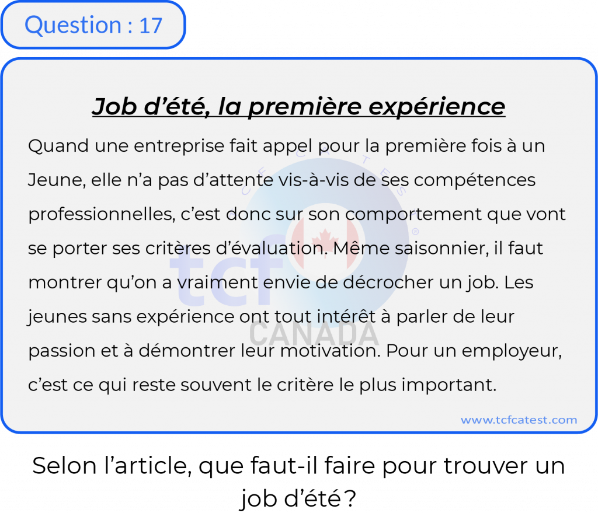
A. Exposer l’ensemble de ses qualités professionnelles.
B. Faire la preuve de son désir de travailler.Bonne réponse
C. Parler avec enthousiasme de ses projets de formations.
D. Parler des emplois qu’on a déjà occupés.
Q18
B1
15 pt
Correction: C — Présenter les relations familiales avec humour.
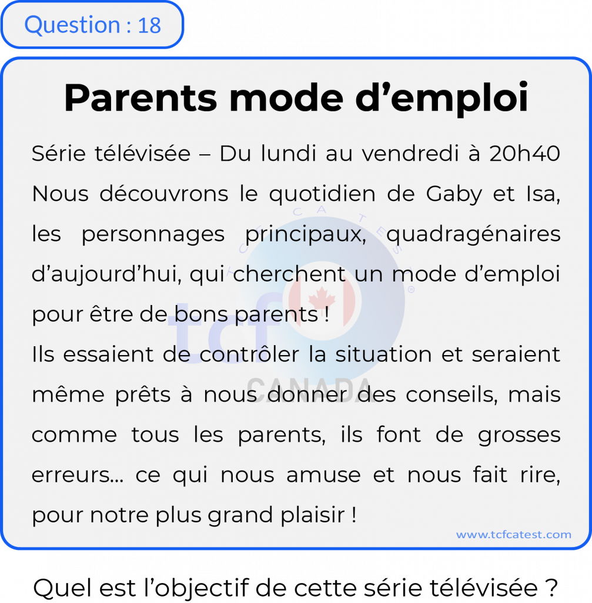
A. Informer sur de nouvelles méthodes éducatives.
B. Montrer la vie de tous les jours d’un jeune couple.
C. Présenter les relations familiales avec humour.Bonne réponse
D. Proposer des solutions à des situations de crise.
Q19
B1
15 pt
Correction: D — Tenter une nouvelle aventure.
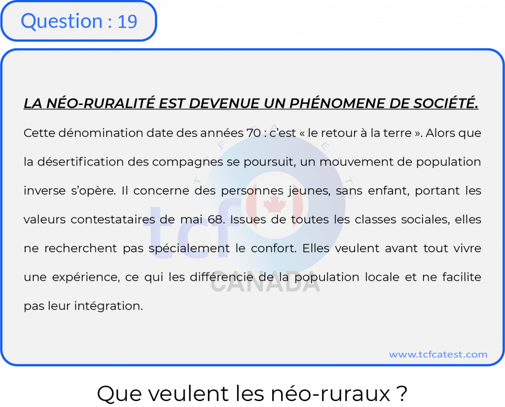
A. Accéder à la propriété privée.
B. Avoir un mode de vie économique.
C. Participer à la vie associative.
D. Tenter une nouvelle aventure.Bonne réponse
Q20
B2
21 pt
Correction: D — Responsabiliser les acteurs concernés.
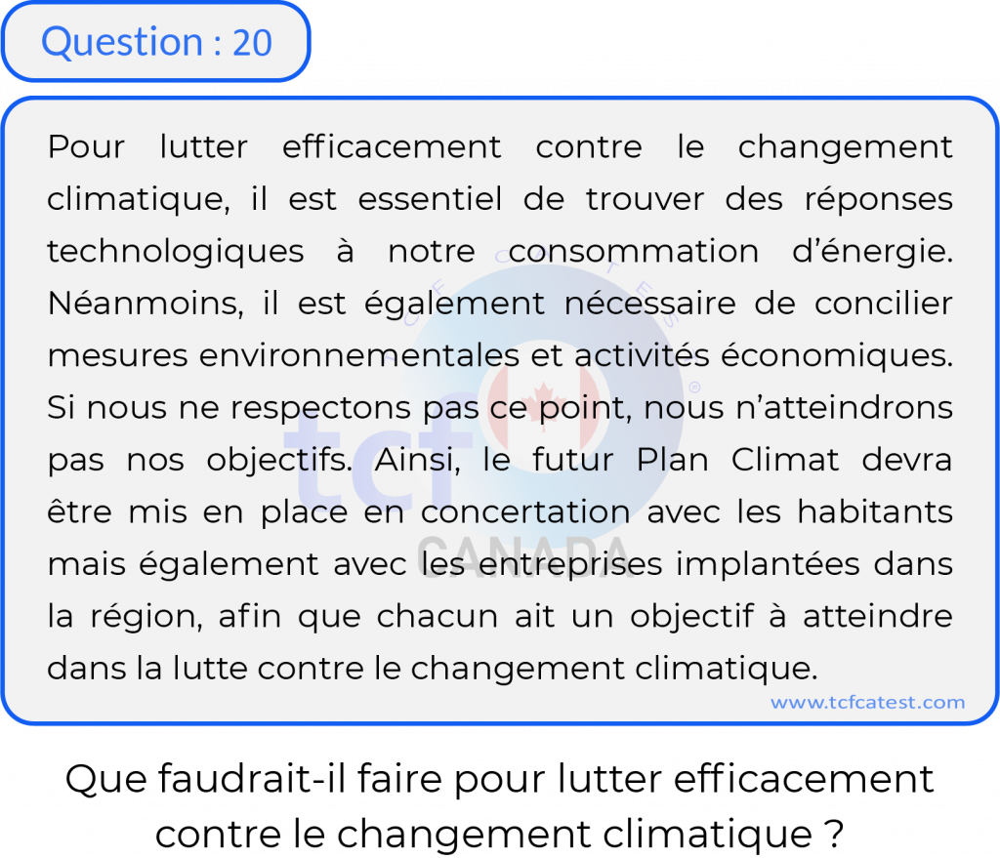
A. Moderniser les installations anti-pollution.
B. Modifier les circuits de production.
C. Organiser des formations sur le sujet.
D. Responsabiliser les acteurs concernés.Bonne réponse
Q21
B2
21 pt
Correction: A — À accueillir des artistes ainsi que leurs œuvres.
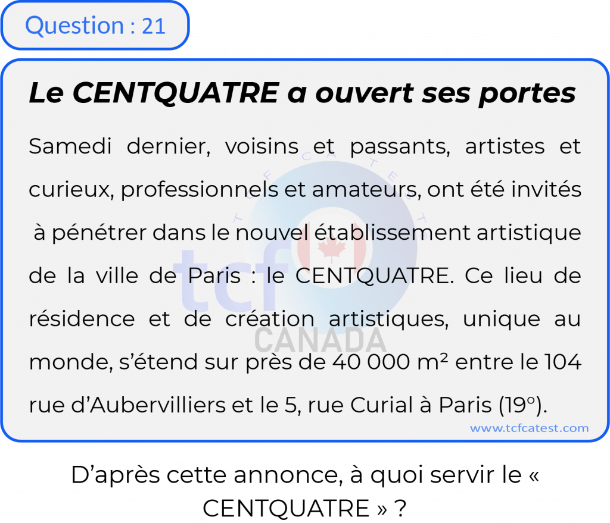
A. À accueillir des artistes ainsi que leurs œuvres.Bonne réponse
B. À créer des ateliers d’arts pour les habitants du quartier.
C. À former une nouvelle génération d’artistes.
D. À transformer des ateliers d’artistes en logement.
Q22
B2
21 pt
Correction: C — L’homme se laisse dominer par la technologie.
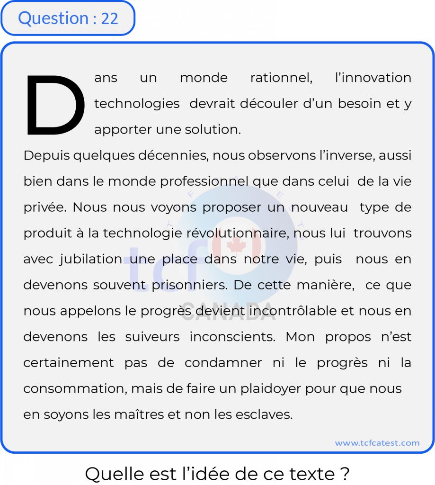
A. Le progrès passe par les nouvelles technologies.
B. L’attrait de la nouveauté est incontournable.
C. L’homme se laisse dominer par la technologie.Bonne réponse
D. La technologie est le reflet de la modernité.
Q23
B2
21 pt
Correction: C — Le retard pris dans ses recherches.
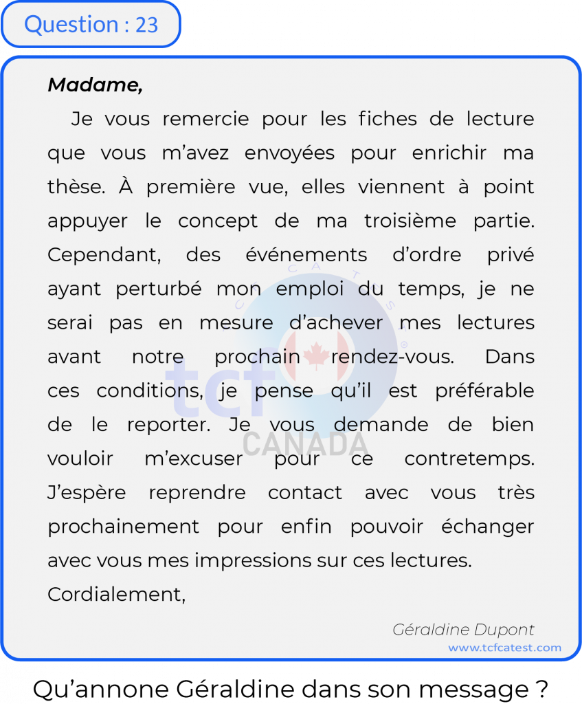
A. L’envoi d’un bilan de ses lectures.
B. La fin des modifications sur sa thèse.
C. Le retard pris dans ses recherches.Bonne réponse
D. La date de leur prochaine rencontre.
Q24
B2
21 pt
Correction: A — Il a écrit une œuvre abondante et variée.
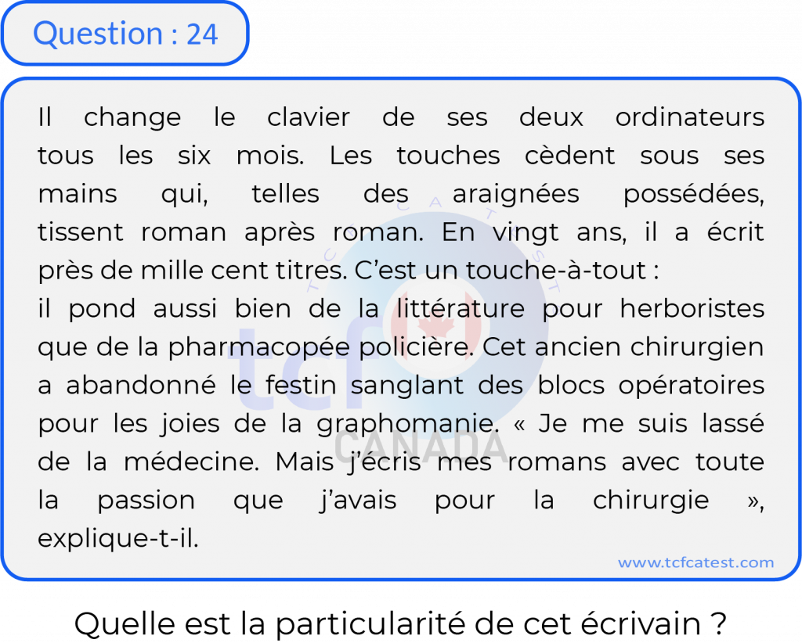
A. Il a écrit une œuvre abondante et variée.Bonne réponse
B. Il a toujours rêve de devenir médecin.
C. Il est emballé par les histoires d’épouvante.
D. Il peine à écrire depuis quelques temps.
Q25
B2
21 pt
Correction: B — Le sport sans douleur.
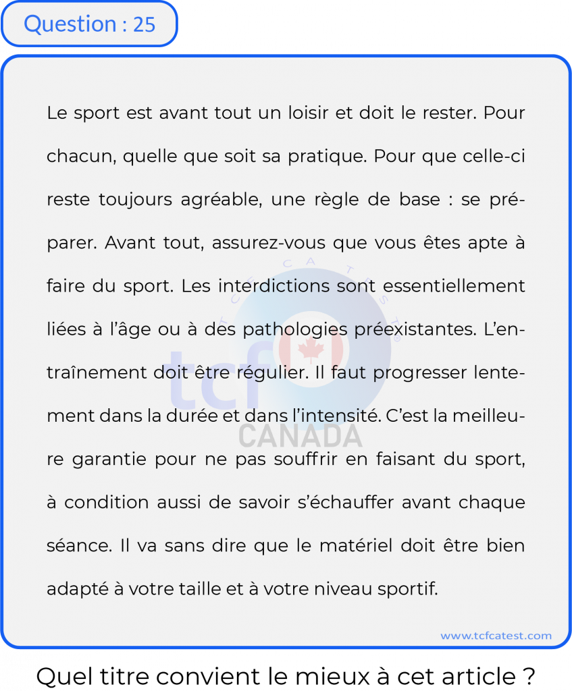
A. Les sports à risque.
B. Le sport sans douleur.Bonne réponse
C. Les dangers du sport.
D. Les bienfaits du sport.
Q26
B2
21 pt
Correction: B — Faire découvrir les formations pour devenir ingénieur.
A. Découvrir le travail de recherche en laboratoire.
B. Faire découvrir les formations pour devenir ingénieur.Bonne réponse
C. Inaugurer l’ouverture d’un campus universitaire.
D. Obtenir des conseils afin de créer une association.
Q27
B2
21 pt
Correction: A — Ils alternent les supports selon le type d’activité.
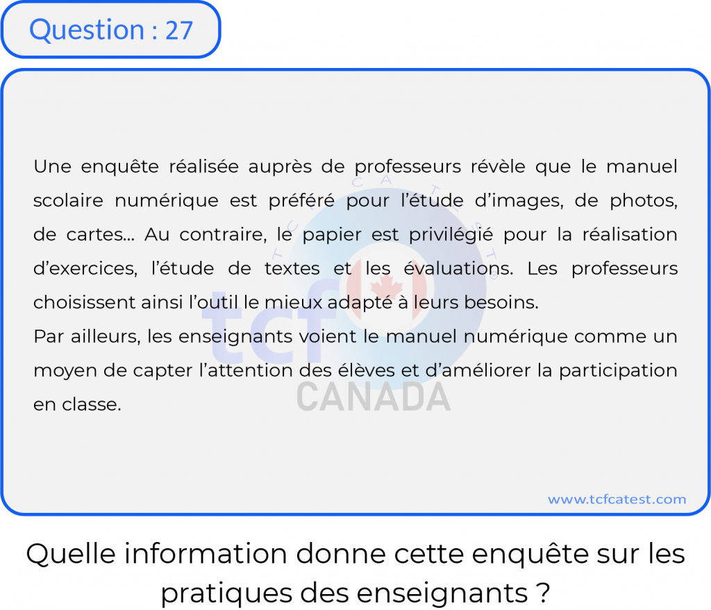
A. Ils alternent les supports selon le type d’activité.Bonne réponse
B. Ils hésitent à utiliser les techniques informatiques.
C. Ils optent toujours pour des ouvrages imprimés.
D. Ils tiennent compte des progrès des apprenants.
Q28
B2
21 pt
Correction: B — rarement ailleurs qu’à Francfort.
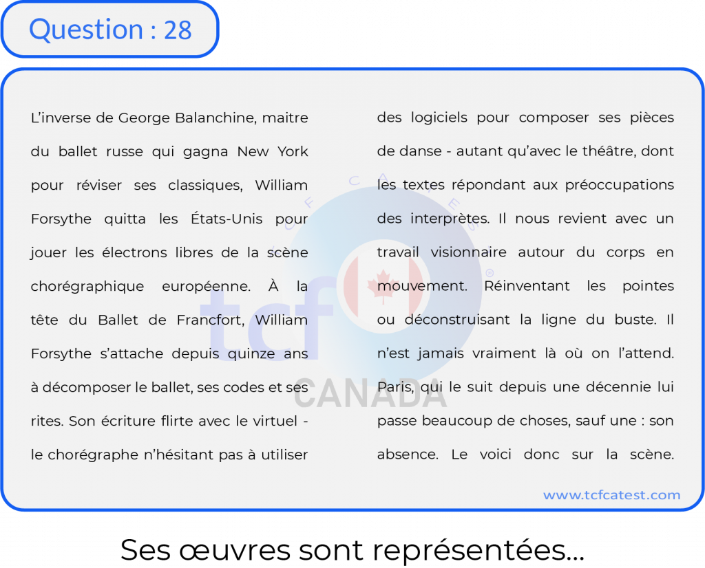
A. en grande majorité New York.
B. rarement ailleurs qu’à Francfort.Bonne réponse
C. en Russie et aux États-Unis.
D. à Paris et partout en Europe.
Q29
B2
21 pt
Correction: C — Que son dossier est examiné.
A. Que sa candidature est sélectionnée.
B. Que sa proposition est acceptée.
C. Que son dossier est examiné.Bonne réponse
D. Que son recrutement est retardé.
Q30
C1
26 pt
Correction: D — Ils se fixent des objectifs élevés dans ces matières.
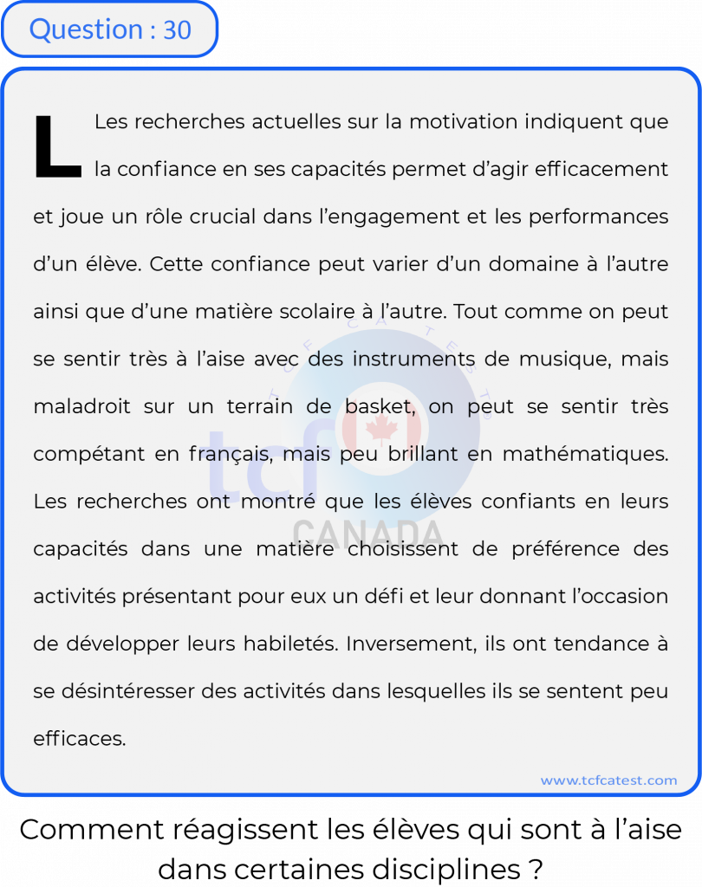
A. Ils finissent par maîtriser l’ensemble des matières.
B. Ils font des efforts dans les autres matières étudiées.
C. Ils négligent les matières trop faciles pour eux.
D. Ils se fixent des objectifs élevés dans ces matières.Bonne réponse
Q31
C1
26 pt
Correction: A — C’est la photographie qui est la forme d’art la moins valorisée.
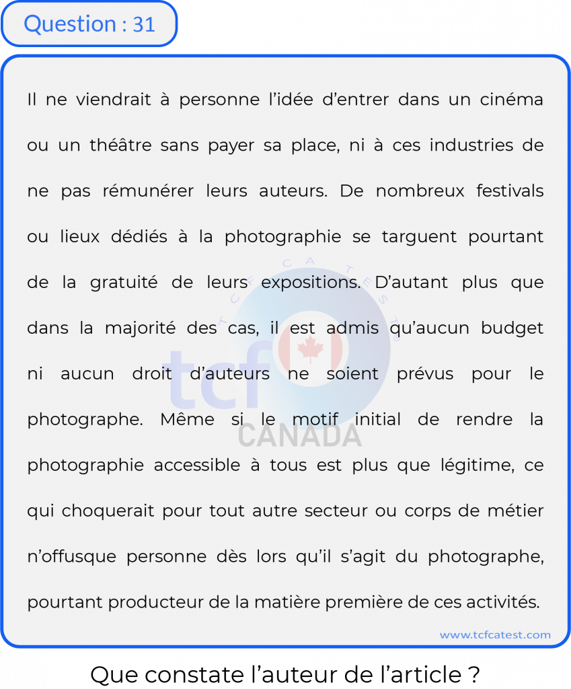
A. C’est la photographie qui est la forme d’art la moins valorisée.Bonne réponse
B. Il y a peu d’événements culturels consacrés à la photographie.
C. Les photographies sont commercialisées à bas prix.
D. N’importe qui peut s’improviser photographe.
Q32
C1
26 pt
Correction: A — Encourager le dialogue avec le public.
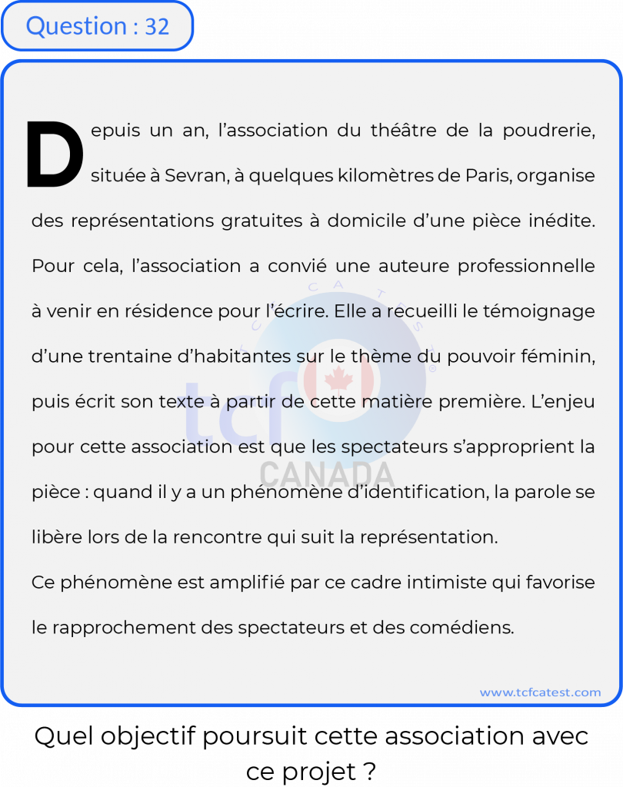
A. Encourager le dialogue avec le public.Bonne réponse
B. Former des acteurs en banlieue.
C. Réaliser une œuvre à plusieurs mains.
D. Sensibiliser à l’égalité des sexes.
Q33
C1
26 pt
Correction: C — Elle permet le dépassement des normes édictées.
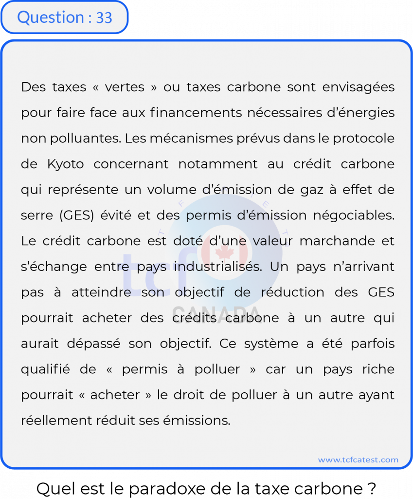
A. Elle concerne uniquement les économies fortes.
B. Elle freine l’utilisation de ressources renouvelables.
C. Elle permet le dépassement des normes édictées.Bonne réponse
D. Elle ralentit le progrès dans les États émergents.
Q34
C1
26 pt
Correction: A — L’extension d’un système de climatisation à tout un quartier.
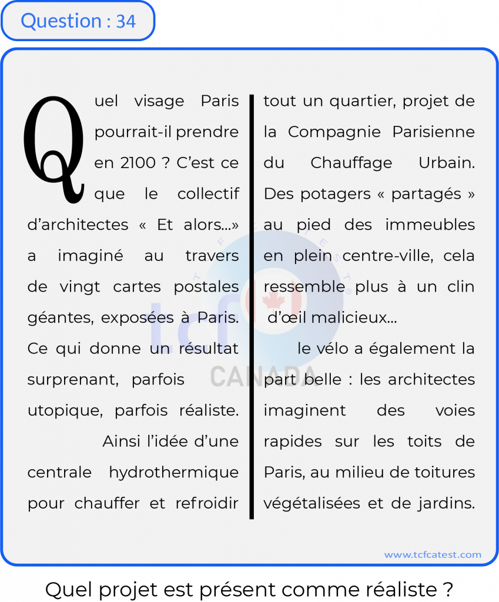
A. L’extension d’un système de climatisation à tout un quartier.Bonne réponse
B. L’installation de parcs sur les toits des bâtiments parisiens.
C. La construction de pistes cyclables au sommet des immeubles.
D. La création de jardins communs pour planter des légumes.
Q35
C1
26 pt
Correction: C — Il s’indigne en estimant que les reproches faits aux consommateurs sont injustifiés.
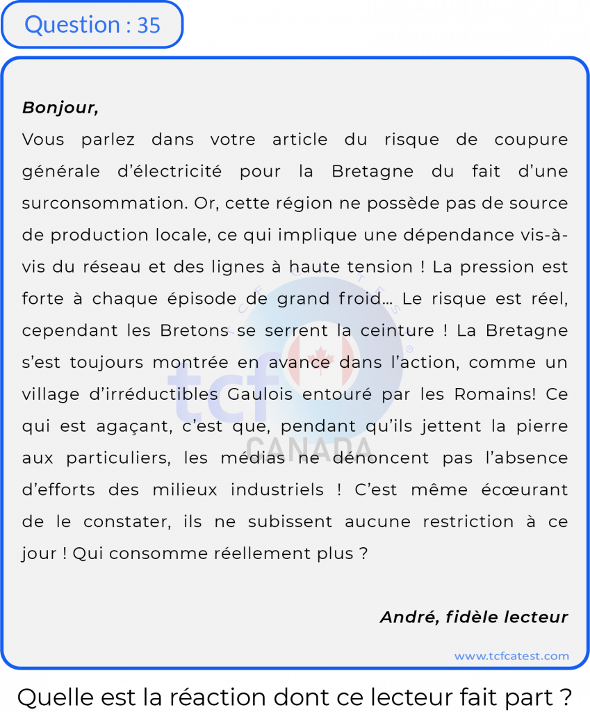
A. Il aimerait que sa région soit plus combative et engagée face aux problèmes locaux.
B. Il réclame de nouvelles dispositions tarifaires pour que les factures soient moins élevées.
C. Il s’indigne en estimant que les reproches faits aux consommateurs sont injustifiés.Bonne réponse
D. Il trouve inquiétantes les conséquences de la mauvaise gestion des sources d’énergie.
Q36
C2
33 pt
Correction: A — Il se sentait trop vieux pour les tournées.
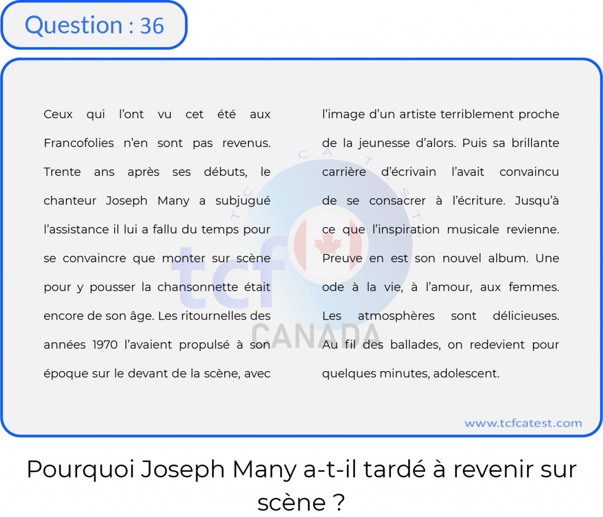
A. Il se sentait trop vieux pour les tournées.Bonne réponse
B. Il voulait fuir son image d’idole des jeunes.
C. Le public préférait l’écrivain au chanteur.
D. Ses chansons étaient passées de mode.
Q37
C2
33 pt
Correction: D — Les dérives induites par l’amélioration du patrimoine génétique.
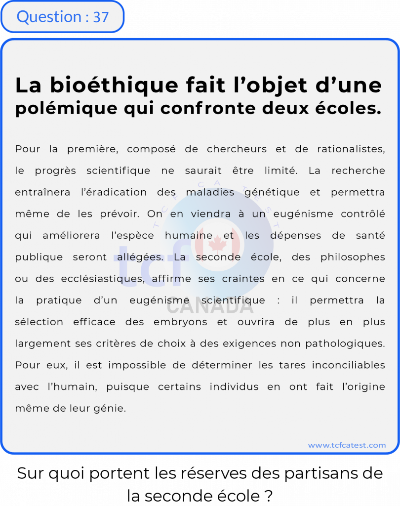
A. Le coût social élevé de prise en charge des maladies génétiques.
B. Le développement de traitements curatifs de pathologies génétiques.
C. Le mode de financement de la recherche génétique fondamentale.
D. Les dérives induites par l’amélioration du patrimoine génétique.Bonne réponse
Q38
C2
33 pt
Correction: D — L’expression picturale populaire existait durant l’époque gallo-romaine.
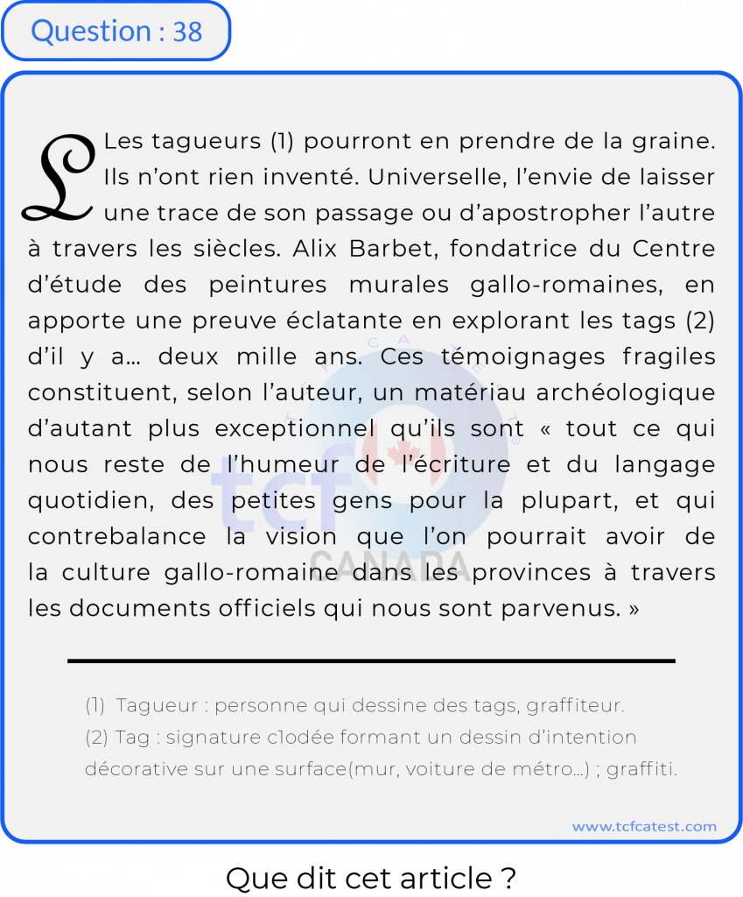
A. La pratique de la peinture murale a pris naissance à l’ère gallo-romaine.
B. Les archéologues refusent de reconnaître la valeur des graffitis gallo-romains.
C. Les tagueurs d’aujourd’hui se sont inspirés des œuvres gallo-romaines.
D. L’expression picturale populaire existait durant l’époque gallo-romaine.Bonne réponse
Q39
C2
33 pt
Correction: A — Pour découvrir de nouvelles références.
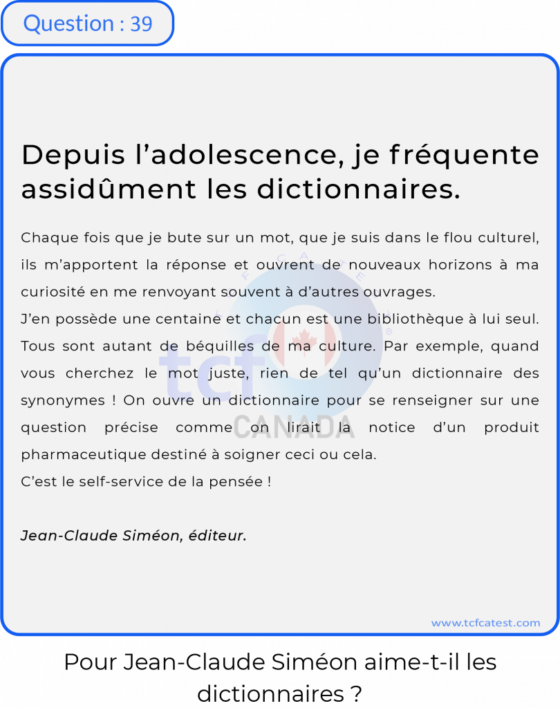
A. Pour découvrir de nouvelles références.Bonne réponse
B. Pour posséder une bibliothèque fournie.
C. Pour s’évader vers des horizons lointains.
D. Pour trouver les remèdes à ses maux.